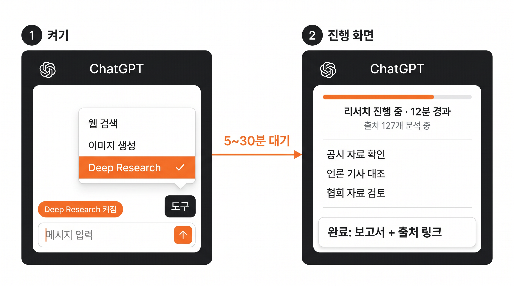
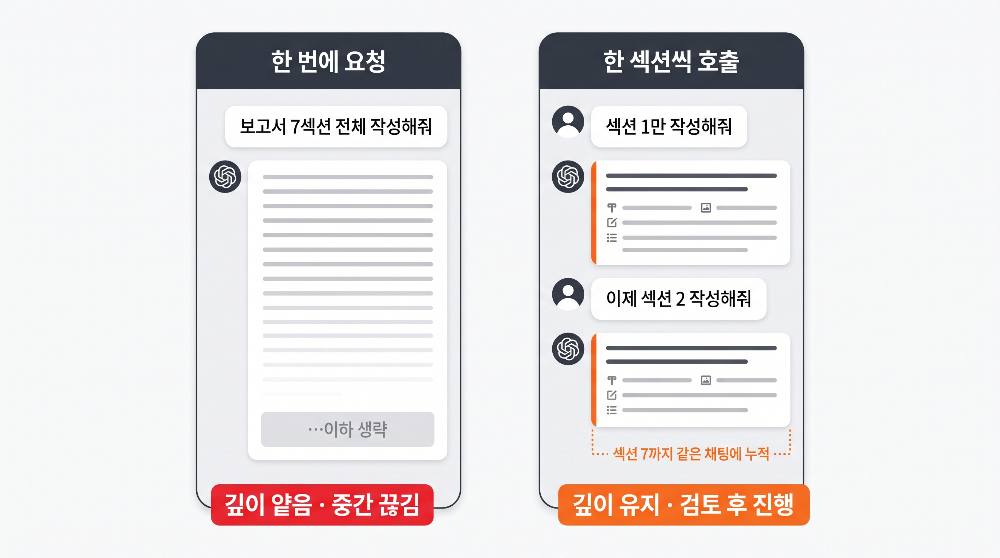

프롬프트 엔지니어링
부서협업 TF의 김대리가 받은 한 가지 미션을 함께 끝까지 완성합니다 — 회의록 · 내부 양식 · 외부 리서치 → 보고서 → GPTs 자산화.
오늘의 미션 : 김대리의 「교사 지원 서비스 개선 보고서」회의록 · 내부 양식 · 외부 리서치를 합쳐 7섹션 보고서를 끝까지 완성합니다
압축을 푼 뒤 안내문을 확인하고, 각 실습에 필요한 파일만 첨부하세요. 완성예시와 OCR 검증기준은 결과를 만든 후 비교합니다.
0-1. 김대리의 미션
당신은 미래엔 전사교육을 위해 설정한 가상 부서협업 TF의 김대리입니다. 편집·콘텐츠, 영업·마케팅, 고객지원, 제작·물류, 인사·재무 담당자가 함께 교사 지원 경험을 살펴봅니다. 2026년 9월 7일 TF 회의에서 박리더가 다음과 같이 요청했습니다.
0-2. 강의 끝나면 이렇게 나옵니다 — 산출물 미리보기
강의를 끝까지 따라오면, 다음 7섹션이 채워진 보고서를 손에 들고 자리로 돌아갑니다. 지금 양식이 머리에 들어오지 않아도 괜찮습니다 — 남은 8개 PART(01~08)를 거치면서 각 섹션이 어떻게 채워지는지 직접 만들어봅니다.
SECTION 1~3배경 · 후보 개요 · 선정 기준
왜 개선안을 검토하는지, A·B·C가 무엇인지, 어떤 기준으로 비교할지. 회의록 + 외부 리서치로 채웁니다.
SECTION 4~5상세 분석 · 실행 전략
후보별 대상 업무·공개 근거·기대 효과 가설. 초안 검토 순서, 협업 관점, 확인할 운영 조건. 퓨샷 + 리서치로 채웁니다.
SECTION 6~7리스크 · 실행 일정
각 후보별 리스크와 대응 방안, 9월 15일 제출까지의 작성 일정. C의 담당·일정과 실제 도입은 미정으로 유지. 퓨샷 + 본인 판단으로 마무리합니다.
0-3. 역할 · 자원 · 보안 룰
강의 내내 김대리 입장에서 작업합니다. 강사가 자료 3종을 미리 준비해 두었습니다.
YOUR ROLE김대리
실습용 부서협업 TF의 김대리. 교사 지원 서비스 개선 보고서를 작성하고 2026년 9월 14일 박리더 검토를 거쳐 9월 15일 제출합니다.
GOAL의사결정 보조
박리더가 A의 초안 검토와 B의 근거 정리를 확인할 수 있게 합니다. C의 담당·일정은 미정으로 남기고, 실제 도입 결정에 앞서 확인할 조건과 리스크를 보여 줍니다.
CONSTRAINT외부 AI 입력 금지
미공개 교재 원고·문항, 계약·실적, 교사·학생 개인정보는 승인되지 않은 외부 AI에 입력하지 않습니다. TF·회의록·보고서·실습 데이터·보안 조건은 교육용 가상 설정이며 미래엔의 실제 조직·정책·문제·성과를 뜻하지 않습니다. 개선안은 공개 웹 근거와 실습 가정을 구분해 작성합니다. 실제 업무 적용 시에는 회사 보안 정책과 계정 유형(개인용/기업용)을 먼저 확인합니다.
0-4. 같은 원리를 내 부서 업무로 옮기기
공통 실습에서는 같은 TF 보고서를 만듭니다. 실무에서는 지시문·맥락·퓨샷과 자료 정리의 흐름을 유지하고, 아래처럼 입력과 산출물만 내 업무로 바꾸세요.
| 직무 | 실습 자료를 바꾸는 예 | 내 업무 산출물 |
|---|---|---|
| 편집·콘텐츠 | 공개 교재 소개 + 가상 검토 회의록 + 안내문 예시 | 교재 활용 안내 초안·콘텐츠 검토표 |
| 영업·마케팅 | 공개 서비스 안내 + 가상 캠페인 요청 + 제안서 예시 | 교사 대상 서비스 소개·캠페인 제안 |
| 고객지원 | 가상 교재 문의 + 공개 이용 안내 + 답변 양식 | 문의 유형별 FAQ·답변 초안 |
| 제작·물류 | 가상 제작 일정·배송 요청 + 업무 보고 양식 | 일정 점검표·배송 문의 대응안 |
| 인사·재무 | 가상 연수 계획·경비 증빙 + 정리 양식 | 교육 운영안·경비 검토용 정리표 |
0-5. 가상 TF 보고서 작성 일정
| 날짜 | 활동 | 담당 | 산출물 |
|---|---|---|---|
| 2026-09-07 | 가상 부서협업 회의 | 김대리·박리더 | 회의 기록 |
| 2026-09-08 | 공개 자료 확인 | 김대리 | 출처·확인 필요 메모 |
| 2026-09-10 | 후보 비교·보고서 초안 | 김대리 | 7섹션 초안 |
| 2026-09-14 | 근거·표현 검토 | 박리더 | 수정 의견 |
| 2026-09-15 | 보고서 제출 | 김대리 | 검토 반영 보고서 |
| 미정 | C 시범 검토 | 미정 | 운영 조건 확인안 |
위 날짜는 교육용 보고서 작성 일정입니다. A의 초안을 먼저 검토하고 B의 근거 정리를 병행합니다. C의 시범 검토 담당·일정과 실제 서비스 도입·연수 개최는 미정이며, 자료에 없는 부서나 날짜를 임의로 채우지 않습니다.
평범한 입력은 평범한 출력을 만든다김대리가 평소처럼 한 줄로 시켜본다 — 어디서 막히는지 직접 부딪힙니다
1-1. 평범한 입력의 한계 — 김대리의 첫 시도
김대리는 박리더 지시를 받고 자리에 돌아왔습니다. 평소처럼 ChatGPT 창을 열고 한 줄로 물어봅니다. 좋은 프롬프트를 먼저 보여드리지 않습니다 — 왜 그게 필요한지 체감하려면, 평범한 시도가 어디서 막히는지 직접 봐야 합니다. 여러분도 지금 ChatGPT를 열고 이 한 줄을 그대로 입력해 보세요 — 결과 창을 닫지 말고 띄워두면, PART 02에서 3요소를 적용했을 때 내 화면에서 직접 Before / After를 비교할 수 있습니다.
빈자리 1WHO · 누가 누구에게 보고?
TF 리더에게 보고하는 김대리? 컨설팅사가 외부 의뢰사에 제출? 톤·전문성 수준이 완전히 달라집니다. 이 한 줄로 AI는 평균치를 추측합니다.
빈자리 2WHAT · 어떤 서비스, 어떤 업무?
어떤 교사 지원 업무를 개선하는지, 대상 서비스와 A·B·C 후보가 무엇인지 없습니다. 가장 핵심 정보가 비어있습니다.
빈자리 3WHY · 왜 만드는 보고서?
회의록에 박리더가 강조한 "교사 편의 · 실행 가능성 · 운영 리스크" 3가지 핵심이 있는데 한 줄에는 전혀 반영되지 않았습니다.
빈자리 4FORM · 양식 없음
제공된 7섹션 실습용 양식이 있는데도, 한 줄 프롬프트는 이를 모릅니다. AI 결과는 회사 양식과 다른 모양이 나옵니다.
빈자리 5DATA · 개선 후보 정보 없음
공개 서비스가 무엇을 안내하는지, 개선안의 근거와 검증할 가설이 무엇인지 AI는 모릅니다. 외부 리서치 없이는 "~를 잘 분석해야 합니다"같은 일반론만 나옵니다.
AI 성능 문제가 아니라 우리가 평범하게 시켰기 때문입니다
프롬프트의 기본 : 지시문 + 맥락 + 퓨샷이 기본기로 김대리의 보고서 1차 구성안까지 만듭니다
2-1. 모든 좋은 프롬프트의 공식
실무에서 쓰이는 좋은 프롬프트는 결국 세 요소의 조합으로 환원됩니다. 이 공식만 외워도 70%는 끝납니다.
동사로 시작 + WHO/WHAT/WHY/FORM
회의록·판단 기준·제약
양식·문체·표 구조 학습
▸ 박리더 핵심 3가지 반영
- WHO · WHAT · WHY · FORM → 지시문 한 문단에 4가지가 압축됩니다 (역할·대상 업무·목적·양식 명시)
- 회의록 · KPI · 제약 조건 → 맥락에 첨부 (회의록 텍스트 그대로 또는 정리해서)
- DATA(개선 후보) → 퓨샷이 양식·접근법을 가르치면, 본문 데이터는 다음 PART 심층리서치에서 채웁니다
2-2. 같은 자료, 같은 AI — 입력이 다르면 결과가 다르다
평범한 한 줄 입력과 3요소 묶음 입력은 같은 AI에서도 완전히 다른 결과를 만듭니다. PART 01의 한 줄 vs PART 02의 3요소 — 김대리의 같은 보고서 작업에 대해 두 결과를 나란히 비교해봅니다.
- 일반론 ("요구 분석 → 서비스 품질 개선")
- 개선안·비교 근거 누락
- 미래엔 부서협업 TF 맥락 없음
- 회사 양식과 무관한 구조
- 박리더에게 가져가면 반려
- 실습용 7섹션 양식 그대로
- 박리더 핵심 3가지(편의·실행·리스크) 반영
- 개선 후보 자리 마련 (다음 PART에서 채움)
- 실습용 양식 보고서 문체·표 그대로
- 9/14 검토용으로 확인할 내용이 드러나는 구조
2-3. 김대리가 3요소를 묶어 보고서 1차 구성안 만들기
실무에서 퓨샷은 보통 회사 내 이전에 작성된 유사 보고서(실습에서는 가상 예시)를 첨부하는 방식입니다. 새로 만들 보고서와 주제는 다르더라도 양식·톤·표 구조가 같은 이전 사례를 AI에 보여주면, AI가 그 양식을 그대로 따라 만듭니다. 아래 파일을 ChatGPT 채팅창에 첨부한 뒤 PROMPT 2를 입력하세요.
회의 전체가 담긴 STT 자동 변환 텍스트. 따로 정리하지 않고 그대로 첨부합니다 — 보고서에 필요한 맥락이 이 안에 다 있습니다.
이전 개선 과제를 다룬 교육용 가상 보고서. 7섹션 구조·문체·표의 퓨샷으로, AI가 이 모양을 그대로 따라 작성합니다.
교사 지원 서비스
개선 보고서 — 1차 구성안
본 보고서는 교사 지원 서비스 개선 후보 A·B·C를 교사 편의·실행 가능성·운영 리스크로 비교하기 위한 1차 구성안이다. A 초안 검토와 B 근거 정리를 우선 진행하고 C의 담당·일정은 미정으로 남긴다. 9월 14일 검토, 15일 제출을 준비하며 실제 도입과 효과는 확정하지 않는다.
- [실습 가정] 2026년 9월 7일 TF 회의에서 교사 지원 개선 후보 3안을 검토하기로 함
- 공개 서비스 안내를 조사하고 실제 제공 기능과 개선 제안을 구분할 계획
- [실습 가정] 9/14 박리더 검토 후 9/15 보고서 제출. C 담당·일정 미정, 실제 도입 미확정
- A 수업자료 탐색 안내 개선 / B 교재 문의 FAQ 개선 / C 교사 연수 운영 개선 — 공개 근거·실행 가능성·우선순위는 다음 단계 심층리서치 후 작성
- 표 양식: 실습용 양식 보고서와 동일 항목 비교표
- 같은 방식으로 섹션별 한 문단씩 구성 — 실제 본문은 PART 06에서 한 섹션씩 채웁니다
실습 가정과 공개 근거를 구분한 7섹션 가상 보고서 워드 파일. PART 03부터 PART 06까지 차근차근 채워가는 흐름의 도착점입니다. 본인 결과물과 비교하면서 톤·구조·표 디자인의 기준으로 활용합니다.
이 공식이 오늘 하루의 뼈대입니다
Deep Research로 개선 후보 3안의 근거를 채운다1차 구성안에서 비워둔 자리를 본문 데이터로 채웁니다
PART 02에서 만든 1차 구성안에는 개선 후보 A·B·C의 근거 자리가 비어 있었습니다. 이번 PART에서 ChatGPT의 Deep Research 기능으로 공개 서비스 정보를 조사하고 개선 후보 3안의 근거를 보강합니다. 끝부분 환각 사례에서는 AI가 그럴듯하게 거짓말하는 패턴도 함께 봅니다 — 보고서에 그대로 넣으면 TF의 판단을 잘못 이끌 수 있는 부분입니다.
3-1. Deep Research 활성화 — 일반 검색과 무엇이 다른가
ChatGPT에는 두 가지 리서치 방식이 있습니다. 일반 웹 검색(Web Search)은 가벼운 검색 + 짧은 요약, 심층 리서치(Deep Research)는 여러 웹 자료를 탐색·종합해 출처를 포함한 보고서로 정리합니다. 단순 확인보다 비교·검토가 많은 과제에 활용하며, 소요 시간과 분량은 질문과 이용 환경에 따라 달라집니다.
▸ 필요한 출처를 찾아 확인
▸ 분량: 질문에 맞는 요약
(단일 기능·자료 찾기 등)
▸ 과제 범위에 맞춰 자료 탐색
▸ 결과: 출처가 있는 보고서
시간·분량은 과제별로 다름

3-2. 개선 후보 근거 조사 프롬프트
Deep Research는 출력 형식과 비교 항목을 명확히 지정하면 가장 잘 답합니다. 개선 후보 3안을 한눈에 비교할 수 있도록 항목들을 자연어로 나열해주고, 출처 URL과 신뢰도 라벨도 함께 요청합니다.
공개 근거와 개선 제안
작성 형식 예시
A·B·C를 교사 편의·실행 가능성·운영 리스크로 비교한다. A의 초안을 먼저 검토하고 B의 근거를 병행 정리하며 C는 담당·일정을 미정으로 둔다. 공개 설명은 서비스 이해에 사용하고 효과는 확인할 가설로 남긴다. 실제 도입이나 시범 운영을 결정한 문서가 아니다.
- [공개 사실] 엠티처 진입 페이지에서 초등·중학·고등 경로를 확인할 수 있다. 근거: 엠티처 공식 안내
- [개선 제안] 학교급·교과·사용 목적별 자료 찾기 안내 초안을 만든다.
- [효과 가설] 안내가 탐색에 도움이 되는지 테스트 과제의 완료 시간·완료 여부로 검증한다.
- [추가 확인 필요] 세부 서비스 화면과 기존 안내의 중복 여부. 현재 탐색이 불편하다고 단정하지 않는다.
- [조사 대상] 미래엔 참고서 자료실에서 교재 관련 공개 안내를 직접 확인하고 근거를 기록한다.
- [개선 제안] 가상 문의를 교재 식별·자료 확인·이용 안내로 분류한 FAQ 초안을 만든다.
- [효과 가설] 답변의 정확성·근거 연결·담당자 검토 시간을 비교한다.
- [추가 확인 필요] 최신 공식 답변과의 일치 여부. 공개 안내만으로 실제 문의량을 추정하지 않는다.
- [공개 사실] 초코클래스 공식 설명은 학교·기관용 학습플랫폼이며 교사가 공유한 자료와 맞춤형 시간표를 활용한다고 안내한다. 근거: 개발자 공식 앱 설명
- [개선 제안] 공개 기능 소개를 활용한 가상 연수의 사전 안내·진행 체크리스트·후속 FAQ를 만든다.
- [효과 가설] 안내 이해도와 운영 체크리스트 누락 여부로 효과를 검증한다.
- [추가 확인 필요] 실제 연수 운영 여부·참가 조건·제공 자료·피드백 방식. C 시범 검토 담당·일정은 미정이며 특정 부서나 날짜를 배정하지 않는다.
- 1단계 · 원문 우선: 공식 서비스 안내·개발자 설명·정부 및 공공기관 자료에서 해당 사실을 확인.
- 2단계 · 보완 비교: 언론·연구·산업 자료는 발행일·대상·방법을 확인해 배경 이해에 사용.
- 3단계 · 검증 전 사용 보류: 블로그·커뮤니티 주장은 원문 근거를 추적. 공식 설명도 성과를 독립 검증한 자료와 구분.
3-3. 환각 사례 — AI가 그럴듯하게 거짓말하는 3가지 패턴
Deep Research를 사용해도 AI는 없는 서비스·수치·자료를 만들어낼 수 있습니다. 다음은 오류를 구별하기 위해 만든 가상의 오답 예시입니다. 실제 서비스의 문제나 검증 결과를 뜻하지 않습니다.
단, 핵심 근거는 검증 후 사용한다
심층리서치 결과를 마크다운으로 정리합니다다음 PART 보고서 작성용 입력 자료로 변환 — 마크다운이 AI 입력 장치로 등장하는 단계
PART 03에서 Deep Research로 받은 개선 후보 3안 리서치 결과는 여러 페이지의 보고서 형태일 수 있습니다. 그러나 그대로 보고서 본문 작성 단계(PART 06)에 입력하면, AI가 길고 흐트러진 문장을 다시 해석하느라 핵심을 놓칠 수 있습니다. 이번 PART에서는 그 리서치 결과를 마크다운으로 위계 정리해 다음 단계에 정확하게 넘기는 방법을 익힙니다.
4-1. 마크다운은 "예쁜 출력 문법"이 아니라 "AI 입력 표지판"
마크다운을 학교에서 배우면 보통 #·##·- 같은 출력 문법으로 가르칩니다. 그런데 실무자 입장에서 마크다운의 진짜 가치는 다른 곳에 있습니다 — 내가 가진 자료를 AI가 잘 이해하도록 구조화해서 입력하는 표준 장치입니다.
### 공개 사실
- 엠티처 초·중·고 진입 경로 안내
- 출처: 엠티처 공식 안내 / 2026-09-08
### 개선 제안
- 학교급·교과별 찾기 안내 초안
### 효과 가설·검증
- 테스트 완료 시간·완료 여부
### 추가 확인
- 세부 화면·기존 안내 중복
▸ PDF·보고서 압축
▸ 회의록·메모 정리
# 위계로 정리▸ 재사용 가능한 자산
▸ 본문 초안
▸ 다음 PART 입력
실무에 필요한 마크다운 5개
5개만 알면 입력 구조화 90%는 끝납니다. 외울 필요 없고 필요할 때 확인만 하면 됩니다.
| 문법 | 의미 | 실무 활용 예 |
|---|---|---|
# | 큰 제목 (자료 이름) | # 교사 지원 서비스 개선 — 후보 A·B·C 정리 |
## | 섹션 (안건·항목 단위) | ## 후보 A: 수업자료 탐색 안내 개선 |
### | 하위 섹션 (세부) | ### 교사 편의 |
- | 목록 (불릿) | - [제안] 학교급·교과별 자료 찾기 안내 초안 |
**굵게** | 강조 (놓치면 안 되는 부분) | **효과 미확인 · 검증 방법 제안** |
4-2. 리서치 결과를 마크다운으로 정리 — 실습
PART 03 Deep Research 결과는 여러 자료를 종합한 보고서 형태입니다. 그대로 이후 단계에 넣으면 AI가 산문 흐름을 다시 따라가야 합니다. 핵심 정보와 출처를 유지하며 위계로 정리하면 중복이 줄고, AI는 개선 후보 3안을 같은 기준으로 비교할 수 있습니다.
- 개선 후보 3안 정보가 산문으로 흩어져 있음
- AI가 비교 기준을 다시 찾아야 함
- 편의·실행·리스크 항목 누락 가능
- 출처 인용 형식이 일관되지 않음
- 개선 후보 3안이 동일 항목으로 비교 가능
- 박리더 핵심 3가지가 항목별 명시
- 출처·사실·가설 라벨 유지
- 다음 PART 본문 작성 즉시 가능
개념을 확인했으니 이제 실습입니다. 김대리가 직접 손으로 마크다운을 작성하지 말고, AI에게 PART 03 리서치 결과를 마크다운으로 정리해달라고 요청합니다. AI가 일관된 위계의 초안을 잡아주면, 학습자가 사실·가설 라벨과 출처의 누락을 확인합니다.
Deep Research가 아직 안 끝났거나 실행이 어려운 경우, 이 파일을 내려받아 같은 흐름 그대로 이어가세요. 채팅에 이 파일을 첨부하고 아래 PROMPT 4를 그대로 입력하면 됩니다.
## 섹션으로 분리
- 각 후보 아래 ### 공개 사실 / ### 개선 제안·효과 가설 / ### 교사 편의 / ### 실행 가능성 / ### 운영 리스크 및 추가 확인을 같은 순서로 배치
- 사실 항목에는 근거 자료 링크·자료명·확인일을 제시
- 공개 사실, [개선 제안], [효과 가설], [실습 가정], [추가 확인 필요] 라벨을 유지. 요약하면서 가설을 사실로 바꾸지 말 것AI는 위 요청에 따라 정리 결과를 md 파일 다운로드 링크로 제공합니다. 학습자는 이 md 파일을 다운받아 PART 05·06에서 그대로 입력 자료로 활용합니다.
4-3. 자료 패키지 만들기 — PART 05·06으로 넘길 준비
PART 05에서 마스터프롬프트를 만들고, PART 06에서 보고서 본문을 작성합니다. 그때 필요한 자료를 미리 한 묶음으로 만들어둡니다. 회의록(원본) + 실습용 양식 퓨샷 + 리서치 정리물(마크다운) 3종 세트가 다음 PART의 입력 패키지입니다.
마크다운으로 위계 정리해서 다음 PART에 넘긴다
프롬프트를 쓰지 말고, 만들어 달라고 요청합니다최소 입력만 던지면 AI가 맥락을 보강해 구조화된 마스터프롬프트로 정리해줍니다
5-1. 프롬프트 작성이 어려운 이유 — 가장 쉬운 해법
PART 02 · 03 · 04를 거치면서 김대리는 프롬프트를 여러 번 작성했습니다. 그런데 실무자 입장에서 매번 5개 빈자리(WHO · WHAT · WHY · FORM · DATA)를 다 채워 쓰는 건 부담스럽습니다. 다음 PART 보고서 본문 작성처럼 길고 복잡한 작업이면 더 그렇습니다. 가장 쉬운 해법은 AI에게 "구조화된 프롬프트를 만들어달라"고 요청하는 것입니다.
▸ 빠뜨린 항목 누락 위험
▸ 분량 길어지면 부담
▸ 다른 작업으로 재사용 어려움
▸ AI가 맥락 자동 보강
▸
(AI 보강) 표시로 추적▸ 다음 작업에 그대로 재사용
5-2. 실습 — 최소 입력으로 마스터프롬프트 요청
평소 쓰는 짧은 프롬프트로 시작합니다. 요청사항 한 줄 + 맥락 몇 줄 + 자료 첨부 정도면 충분합니다.
# 큰 섹션 → ## 하위 항목 구조의 마크다운으로 정리
2. 내가 빠뜨린 맥락(출력 형식, 검증 기준, 우선순위 등)은 부서협업 개선 보고서의 작성 관행에 맞춰 알아서 보강
3. 보강 항목 뒤에 (AI 보강) 표시
4. 추가 정보가 필요한 부분은 [확인 필요]로 표시. 회의에서 미정으로 둔 C 담당·일정은 추정해 채우지 말 것
5. A 초안 검토·B 근거 병행은 반영하되 실제 도입·연수 개최 결정은 만들지 말 것5-3. AI가 만들어준 마스터프롬프트 — 모범 결과
AI는 김대리가 던진 최소 정보를 정리하면서, 빠뜨린 맥락을 부서협업 개선 보고서의 작성 관행에 맞춰 자동으로 보강해줍니다. (AI 보강) 표시로 어디가 AI가 더한 부분인지 명확히 보입니다. 학습자는 이 결과를 검토하고 수정해서 본인 마스터프롬프트로 확정합니다.
만들어 달라고 요청하는 것이 가장 실용적입니다
한 번에 7섹션을 다 만들지 말고, 한 절씩 호출합니다마스터프롬프트와 자료 패키지를 한 채팅에 두고 섹션 1부터 7까지 차례로 채워갑니다
6-1. 한 번에 다 만들지 말고, 한 섹션씩 호출하는 이유
PART 05에서 만든 마스터프롬프트로 "보고서 7섹션 전체 한 번에 작성해줘"라고 하면 AI가 일단 답하긴 합니다. 그러나 결과는 각 섹션의 깊이가 얕고, 분량이 들쭉날쭉하고, 핵심 강조 3가지가 일관되게 반영되지 않습니다. 그래서 실무에서는 섹션 1부터 7까지 한 절씩 호출합니다 — 큰 작업을 잘게 나눠 순차로 던지는 프롬프트 체이닝 방식입니다.

6-2. 실습 — 한 섹션씩 호출 (PROMPT 6)
실습은 간단합니다. PART 05에서 마스터프롬프트를 만든 그 채팅에서 그대로 이어갑니다 — 마스터프롬프트와 자료 3종이 이미 채팅에 올라와 있으므로, "섹션 N만 작성해줘" 형태로 한 절씩 호출만 하면 됩니다. 각 섹션이 완성되면 검토 후 다음 섹션으로 넘어갑니다.
AI가 작성한 섹션 1을 검토 후, 같은 채팅창에 "이제 섹션 2 작성해줘"로 이어 호출합니다. 마스터프롬프트와 자료 패키지가 이미 채팅 맥락에 있으므로 매번 다시 적을 필요가 없습니다.
6-3. 7섹션 완성 흐름
섹션 1부터 7까지 차례로 호출하면 다음 흐름으로 보고서가 완성됩니다. 각 섹션은 한 채팅 안에서 자동으로 이전 섹션 맥락을 참고합니다.
- 박리더 핵심 강조 3가지(교사 편의 · 실행 가능성 · 운영 리스크)가 개선 후보 3안 모두에 일관 반영되었는가
- A 초안 검토 우선·B 근거 병행·C 담당과 일정 미정이 반영되며 실제 도입 미확정이 드러나는가
- 공개 사실의 URL·확인일을 확인했는가. 제안·효과 가설을 실적으로 쓰지 않았는가
- 실습 가정이 실제 내부 문제·정책으로 표현되거나 미공개 자료가 포함되지 않았는가
한 섹션씩 호출해야 깊이가 살아납니다
보고서가 완성된 채팅 안에 내 작업 스타일이 다 들어있습니다한 번 더 요청하면 주제가 바뀌어도 그대로 쓸 수 있는 "내 스타일 마스터프롬프트"가 추출됩니다
7-1. 보고서가 끝난 순간, 채팅 안에는 무엇이 있는가
PART 06에서 김대리는 7섹션을 한 절씩 호출하면서 매번 검토·수정·재요청을 거쳤습니다. AI 입장에서 그 채팅창 안에는 김대리의 작업 흐름·톤·구조 선호·수정 기준이 모두 누적되어 있습니다. 이 정보를 그대로 흘려보내면 다음 보고서 작성에 다시 처음부터 시작해야 합니다. 한 번 더 요청해서 "내 스타일이 담긴 마스터프롬프트"로 추출합시다.
| PART 05 · 프로젝트 마스터프롬프트 | PART 07 · 내 스타일 마스터프롬프트 |
|---|---|
| 이번 「교사 지원 서비스 개선 보고서」 전용 | 주제가 바뀌어도 유지되는 내 작업 방식 |
| 미래엔 부서협업 TF 맥락 · 박리더 핵심 강조 3가지 · 7섹션 양식 | "한 섹션씩 호출" 흐름 · "출처는 무조건 표기" 톤 · "결론 먼저 보이게" 구조 |
| 주제가 바뀌면 재사용 어려움 | 다른 보고서에도 그대로 적용 |
PART 05 마스터프롬프트가 "이번 프로젝트의 맥락"이라면, PART 07 내 스타일 마스터프롬프트는 "내가 일하는 방식"입니다. 둘 다 챙기면 다음 작업의 대부분이 자동화됩니다.
7-2. 실습 — 내 스타일 마스터프롬프트 추출 요청
PART 06에서 보고서 7섹션을 완성한 그 채팅창 그대로에 다음 프롬프트를 입력합니다. AI는 채팅 안에 누적된 작업 흐름을 분석해 "내 스타일 마스터프롬프트"로 정리해줍니다.
AI가 추출한 내 스타일 마스터프롬프트는 다음과 같은 형태입니다. 주제 자리만 비워두고, 작업 흐름·톤·구조·검토 기준은 그대로 유지됩니다.
7-3. 주제가 바뀌어도 흐름은 유지 — 적용 시나리오
이 "내 스타일 마스터프롬프트"는 교사 지원 서비스 개선 외 다른 보고서에도 그대로 첫 호출로 쓸 수 있습니다. 빈칸만 채워서 던지면 동일한 작업 방식으로 진행됩니다.
적용 1교재 안내 콘텐츠 개선
주제: "교재 안내 콘텐츠 개선 보고서". 자료: 공개 교재 소개·실습용 문의 유형·안내문 초안. 같은 흐름(자료 정리 → 한 섹션씩 본문).
적용 2공개 교육서비스 동향 정리
주제: "공개 교육서비스 동향 보고서". 자료: 서비스 공식 발표·공개 기능 안내·업무 적용 가설. 같은 톤·구조로 진행.
적용 3교사 연수 운영 제안서
주제: "교사 연수 운영 제안서". 자료: 가상 연수 요청·운영 회의록·안내문 예시. 같은 검토 기준으로 작성.
내 작업 스타일이 거기 다 들어있습니다
오늘 만든 모든 흐름을 GPTs로 자산화합니다마스터프롬프트와 자료 패키지를 GPTs에 등록하면 다음 분기에는 한 줄 호출로 같은 보고서를 다시 만듭니다
8-1. GPTs란 무엇이고, 왜 자산화하는가
PART 05에서 만든 마스터프롬프트와 PART 04 마크다운 정리물·실습용 양식 퓨샷·회의록을 매번 다시 첨부하는 건 비효율적입니다. GPTs는 ChatGPT 안에서 만드는 업무별 전용 챗봇입니다. 마스터프롬프트를 Instructions에, 자료 패키지를 Knowledge에 등록해두면 다음 분기 김대리는 한 줄 호출로 같은 보고서를 다시 만들 수 있습니다.
8-2. GPTs 구축 실습 — 3단계로 끝
GPTs 구축은 직관적입니다. ChatGPT 좌측 메뉴 → GPT 탐색 → 만들기(Create)에서 다음 3가지만 채우면 됩니다.
NAME이름
교사 지원 서비스 개선 어시스턴트
TF의 반복 보고서 작성에 사용할 이름
INSTRUCTIONS기본 지시
PART 05 마스터프롬프트 + PART 07 작업 스타일
7섹션 · 한 섹션씩 작성 · 사실과 가설 구분 · 출처 유지
KNOWLEDGE참고 파일
가상 TF 회의록 · 실습용 양식 · 공개 리서치 MD
검증한 자료만 등록하고 갱신일 확인
STEP 1이름 설정
예: "교사 지원 서비스 개선 어시스턴트". 실습에서는 나만 보기로 저장하고, 업무 공유는 이용 중인 회사 워크스페이스의 허용 범위를 확인합니다.
STEP 2Instructions 등록
PART 05에서 만든 마스터프롬프트를 그대로 복사 → 붙여넣기. PART 07의 내 스타일 마스터프롬프트도 톤·작업 흐름 가이드로 상단에 함께 붙여넣습니다. 챗봇이 호출될 때마다 이 지시를 기본으로 따릅니다.
STEP 3Knowledge 업로드
PART 02·04에서 준비한 자료 3종 첨부 — 회의록 STT · 실습용 양식 퓨샷(DOCX) · 리서치 정리물(MD). 챗봇이 답할 때 이 자료들을 자동으로 참고합니다.
8-3. 다음 분기 활용 — 한 줄 호출 시연
GPTs가 등록되면 다음 분기 김대리는 같은 작업을 처음부터 다시 하지 않습니다. 새 분기 회의록 + 리서치 결과만 대화창에 새로 첨부하고 챗봇을 호출하면 끝입니다. (자료를 계속 쓸 거라면 GPTs 편집 화면에서 Knowledge를 교체해 둡니다.)
오늘 강의에서 익힌 모든 흐름이 GPTs 안에 그대로 살아있습니다. 같은 보고서를 다시 만드는 데 드는 시간이 처음 만들 때보다 크게 단축됩니다. 허용된 워크스페이스 공유 범위에서 함께 활용하면 전사 차원의 디지털 자산이 됩니다.
8-4. 구현 실습 — 두 번째 챗봇 「교사연수 경비 정리 챗봇」 만들기
보고서 어시스턴트가 오늘의 흐름을 저장한 챗봇이라면, 이번엔 완전히 다른 반복 업무를 직접 챗봇으로 만들어 봅니다. 영수증 사진을 올리면 엑셀로 정리해 주는 챗봇 — 이번 상황은 가상 교사 연수의 인쇄·문구·다과·행사소모품 경비를 검토용 표로 정리하는 일입니다. 입력 시간을 줄이되, 누락값은 사람이 확인합니다.
INPUT영수증 이미지 다수
JPG/PNG 여러 장 또는 ZIP 압축 파일. 가상 교사 연수 운영경비 증빙 7장.
PROCESSOCR + 엑셀 정리
챗봇이 이미지를 한 장씩 읽어 5개 항목을 추출하고 엑셀로 기록.
OUTPUT경비 검토용 엑셀 파일
가맹점명 / 거래일시 / 총금액 / 부가세 / 공급가액 5열 시트 + 다운로드.
교육용 가상 상호·거래로 제작한 PNG 7장입니다. 7번은 부가세·공급가액이 인쇄 누락되어 있으므로 추정하지 않고 확인 필요로 남기는지 테스트합니다.
함께 보기: 영수증 실습 안내 (MD) · 강의용 OCR 검증 기준 (CSV). 결과 7행과 원본 이미지, 누락값을 비교하세요. 이 표는 정산 승인 결과가 아닙니다.
아래 지시문이 챗봇의 두뇌(Instructions)가 됩니다 — 앞에서 만든 마스터프롬프트와 같은 구조화 원리로 짜여 있고, 이번에는 작업 순서 · 예외 처리 · 필드별 규칙 · 실패 폴백이라는 4개 기둥으로 구성했습니다.
STEP 1챗봇 만들기
ChatGPT 좌측 GPT 탐색 → 만들기(Create) → 구성 탭의 Instructions에 위 지시문을 통째로 붙여넣기. Knowledge는 이번 챗봇엔 필요 없습니다.
STEP 2이름 붙여 저장
이름 「교사연수 경비 정리 챗봇」 + 아이콘 선택 → 저장(나만 보기). 사이드바에 두 번째 챗봇이 생깁니다.
STEP 3영수증으로 테스트
챗봇 대화창에 영수증 ZIP 업로드 + "가상 교사 연수 경비 7장을 정리하고 누락값을 알려줘" → 7행·5열, 7번 확인 필요 항목, 엑셀 다운로드를 원본·검증 기준과 비교.
업무별 챗봇으로 누적되는 디지털 자산
한 번 잘 만든 마스터프롬프트는 업무별 전용 챗봇으로 저장됩니다. 새 사람이 와도 똑같은 양식으로 답하고, 본인이 잊어버려도 챗봇이 기억합니다. 매번 신입에게 입으로 설명하는 대신 매뉴얼을 만들어 두는 것과 같습니다.
- 교재 안내 개선
- 교사 문의 정리
- 공개 서비스 조사
- 제안서 작성
- 주간 업무 보고
- … 업무 수만큼
평생 자산이 됩니다